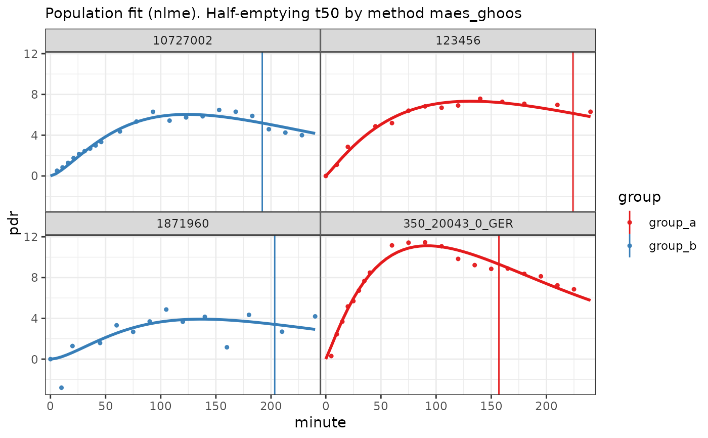

Uses breathtest_read_function to determine the file type
and reads it if it has a valid format.
Value
A list of breathtest_data, even if
only one file was passed. The list can be passed to cleanup_data
to extract one concatenated data frame for processing with nls_fit,
nlme_fit, null_fit (no processing) or
stan_fit in separate package breathteststan.
Examples
files = c(
group_a = btcore_file("IrisCSV.TXT"),
group_a = btcore_file("350_20043_0_GER.txt"),
group_b = btcore_file("IrisMulti.TXT"),
group_b = btcore_file("NewBreathID_01.xml")
)
bt = read_any_breathtest(files)
str(bt, 1)
#> List of 4
#> $ group_a:List of 23
#> ..- attr(*, "class")= chr "breathtest_data"
#> $ group_a:List of 23
#> ..- attr(*, "class")= chr "breathtest_data"
#> $ group_b:List of 23
#> ..- attr(*, "class")= chr "breathtest_data"
#> $ group_b:List of 23
#> ..- attr(*, "class")= chr "breathtest_data"
#> - attr(*, "class")= chr "breathtest_data_list"
# Passing through cleanup_data gives a data frame/tibble
bt_df = cleanup_data(bt)
str(bt_df)
#> tibble [136 × 4] (S3: tbl_df/tbl/data.frame)
#> $ patient_id: chr [1:136] "123456" "123456" "123456" "123456" ...
#> $ group : chr [1:136] "group_a" "group_a" "group_a" "group_a" ...
#> $ minute : num [1:136] 0.01 10 20 45 60 75 90 105 120 140 ...
#> $ pdr : num [1:136] 0 1.11 2.86 4.87 5.19 ...
# If you want data only, use null_fit()
plot(null_fit(bt_df))
# Plot population fit with decimated data
plot(nlme_fit(bt_df))
